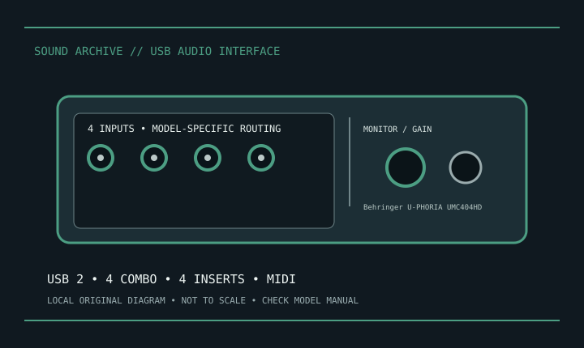

[ INDIVIDUAL MODEL // SOUND HARDWARE ]
Behringer U-PHORIA UMC404HD
UMC404HD is Behringer’s four-input USB 2.0 recording interface. Keep distinct from UMC204HD and UMC1820.

Model-specific specifications
| Product | Behringer U-PHORIA UMC404HD. |
|---|---|
| Host | USB 2.0 computer connection. |
| Inputs | Four XLR/TRS combination mic/line/instrument inputs with Midas-designed microphone preamps. |
| Outputs | Four analog outputs; rear-panel connections include TRS, RCA and XLR playback options as specified by Behringer. |
| Inserts | Four analog insert points for external processing. |
| Conversion | Behringer specifies 24-bit/192 kHz converters. |
| MIDI | 5-pin DIN MIDI input and output. |
| Phantom | Switchable +48 V phantom power for condenser microphone use; follow manual. |
| Monitoring/OS | Direct monitoring; Behringer lists computer use with Windows/macOS and model-specific driver support. |
Compatibility & preservation
Keep UMC404HD distinct from similarly named UMC204HD/UMC1820. Record direct-monitor mix, insert wiring and +48 V state. Use the model-specific driver and check the host OS; no phantom power should be sent to incompatible devices.
- Photograph the model/revision and connector panel before service.
- Retain manufacturer manual, driver/firmware package and known-working host/routing configuration.
- Follow documented input levels, cabling and phantom-power precautions.
Manufacturer sources
- Behringer U-PHORIA UMC404HD — manufacturer product informationModel-specific manufacturer product page.
- Manufacturer manual and supportOfficial manual/download source; confirm OS and model revision.